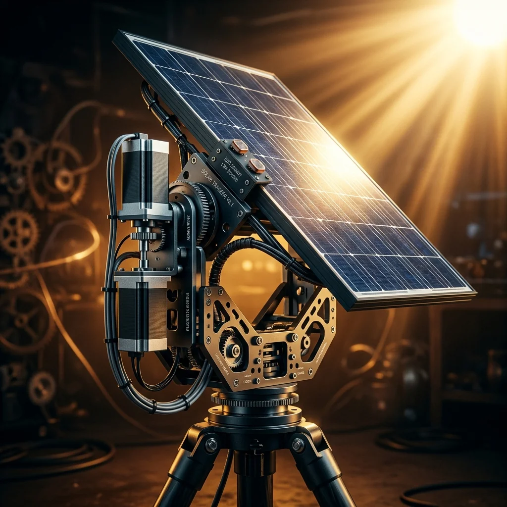
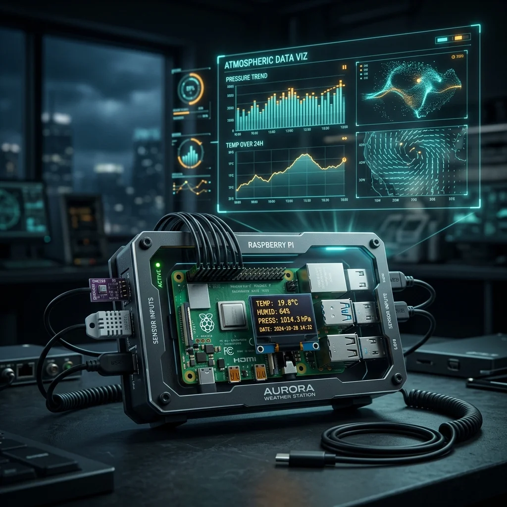

Dual-Axis Solar Tracker

Project Overview
The Dual-Axis Solar Tracker continuously orients a solar panel toward the brightest light source across two axes using four LDR sensors. An Arduino drives two servo motors to correct the panel angle, improving energy harvest efficiency compared to a fixed-mount panel.
Key Features & Implementation
- Quad-LDR Sensing: Four LDRs at the panel corners generate differential light readings for precise tilt and pan error signals.
- Dual Servo Drive: Two MG996R servos independently control pan and tilt, with configurable dead-bands to prevent continuous micro-jitter.
- Cloud Cover Handling: A detection mode freezes servos when ambient light drops below a threshold, preventing erratic hunting on overcast days.
Challenges Solved
High-torque servos drew excessive current causing Arduino brownouts. A dedicated 5V 3A supply for the servos with shared ground completely decoupled servo power from the logic supply and eliminated all instability.
Explore Related Projects
Discover more of our automation projects.

Smart Plant Watering System
ESP8266-based automatic irrigation with soil moisture sensors and mobile alerts.

Weather Station
Raspberry Pi weather station with real-time temperature, humidity and pressure monitoring.